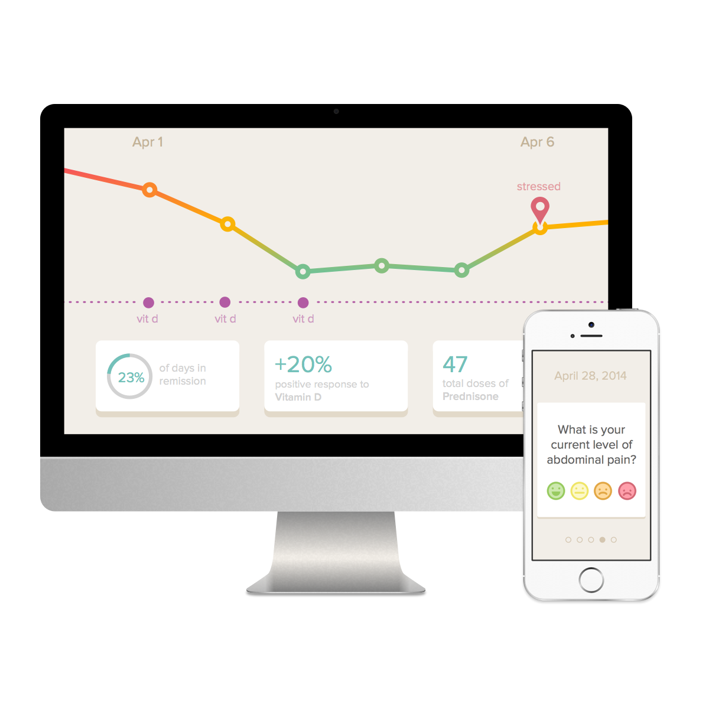

Gallery
{kind=link}

Flaredown is a free web and mobile app that helps patients track and visualize their illness, treatments, and symptom triggers so that they can understand how their choices affect their health.
Utilizing metrics created by medical researchers to measure illness severity allows Flaredown to gather data in a research-friendly format that can be used to evaluate treatments in the real world, and find the best new ones to be shared with patients everywhere.
Logan Merriam was diagnosed with Crohn’s Disease at the age of 15. He spent the next six years working with his doctors to treat the illness, with little success. By then he had tried every medication on the market, and when his disease relapsed his doctor suggested surgical removal of the affected organs.
Unwilling to take that step, and at the end of the line with medications, Logan started to look for other ways of controlling his symptoms. He spent a year tracking how his choices affected his illness on paper—things like foods, stress, sleep, and a million others—and made more meaningful progress toward a healthy, normal life than he ever had.
He discovered that many patients go through the same learning process. The evidence is all over the internet: patients are taking their questions to forums and social networks and learning from one another. But frustratingly, even people with the same illness respond wildly different to treatments and symptom triggers.
Two problems became clear: we still do not have a solid idea of how to treat chronic disease, and each patient must learn for themselves how to live with and control their illness.
Logan—at that point a senior in design school—sat down to put some quick solutions to paper, stayed up all night, and by the following morning had designed an early version of Flaredown: an app that helps patients track their health and treatments, and visualize them so that they can see how their choices affect their illness. And furthermore, can use that data to evaluate treatment efficacy on a broader scale, and identify environmental factors that are likely to trigger patients’ symptoms.
After months of slowly building Flaredown on his own, Logan met Graham Powrie, a remote web developer who took an interest in the project. Graham quickly laid the foundation for Flaredown and introduced data scientist Allen Grimm to the project. Rheumatologist Dan Sager—also experimenting with mobile health applications—joined to consult on doctor-facing functionality.
The team is working on their own time and money, and the conviction that if Flaredown helps even one person stay healthy when they would have otherwise been ill, it is a worthwhile endeavor.
Flaredown is a combination of open-ended patient focused tracking combined with disease scoring questionnaires developed by doctors and medical researchers. In this way we provide a bridge between medical data and patient lifestyle data— something we believe needs much more attention. That being said, the correlations and meaning that can be drawn from Flaredown data depends much on the rigor of the patient in how much and how often they track. For a more in depth explanation of data collection and it's scientific relevance, see our data page.
Flaredown will always be free to use.
Flaredown is an assistant in researching your own disease. There is only so much time to discuss your symptoms and the possible causes with your doctor and they can't be there to advise you on every aspect of your lifestyle. Flaredown intends to help the patient collect more and better information about their disease so that, in combination with their doctor, they can make much more informed decisions.
So far the response has been fantastic! Doctors know that chronic disease is a complex puzzle and that while the patient is living with the disease, their self-reporting once a month (or less often) is a process fraught with memory error, bias and unrelated sentiment. Flaredown presents a reliable history that doctors can make informed decisions on.
Flaredown does not give medical advice, but encourages patients to explore the scope of their lifestyle in narrowing down the triggers of their disease. Flaredown is for tracking and noting the effects of a patient's lifestyle, and while we hope this yields a clear picture of disease triggers, health decisions should always be in combination with a doctor.
Yes, the Flaredown system was built to be flexible and falls into "health tracking" category of applications, but we chose to focus only on chronic disease for a few reasons. Chronic disease is a place where health tracking can do more good and chronic disease patients are the most motivated explore their health rigorously. But perhaps the biggest reason is that Flaredown is a personal dream for it's creator, also a chronic disease patient, Logan Merriam.
As a patient, it's really simple: just check in once a day (or less often, depending on your disease) and note the things you think could be causing your disease to worsen. Over time, you'll be building a detailed medical history that your doctor can help you decode and make decisions on.
Most chronic diseases follow a pattern of "triggers" and "flareups". In short, there are lifestyle related causes for the severity of your disease, perhaps food or exercise or stress. The basis of Flaredown is to find what triggers cause your flareups so you can avoid them, or alleviate them through treatments you can verify.
Stress, diet, exercise, vitamins and specific pharmaceuticals will all be typical things to track with Flaredown, but there is a bigger picture as well... We know that chronic disease patients often run into the boundaries of existing medical knowledge and continue searching. There are many areas that medical research has yet to explore or does not have the resource to explore properly. We hope that Flaredown will enable patients to explore these areas (individually and in aggregate) in an organized fashion such that brings real relief to chronic disease and informs medicals researchers of promising avenues to travel.
In the development corner, we use Ruby on Rails combined with Ember JS in hopes of delivering a truly incredible user experience. Data science is currently blossoming in the web world, and we are adamant about weaving data science technology into the fabric Flaredown. Our biggest asset is a keen sense of design and considering it first in all parts of the project. We consider the proper balance of development, data and design a rubric for the success of Flaredown.
{kind=link}